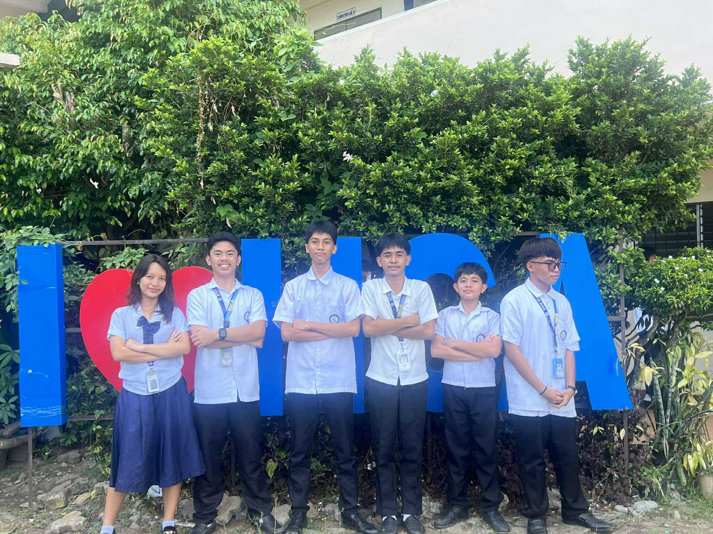

This page shows my education background.

I learned about the World Wide Web and how websites work.
Challenge: Understanding how the internet connects websites.
I learned the basic structure of HTML.
Challenge: Remembering HTML tags.
I learned how to add text, images, and links.
Challenge: Fixing mistakes in my code.
I learned about CSS and how it designs a website.
Challenge: Learning how CSS works with HTML.
I learned how to use colors in CSS.
Challenge: Choosing the right color combination.
I learned how to change fonts and text style.
Challenge: Finding the best font for the website.
I practiced creating webpages.
Challenge: Making the layout look organized.
I learned how to add navigation links.
Challenge: Linking pages correctly.
I improved my website design.
Challenge: Making the website look better.
I completed my website project.
Challenge: Fixing final errors in the website.